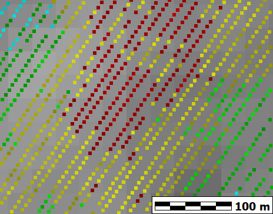
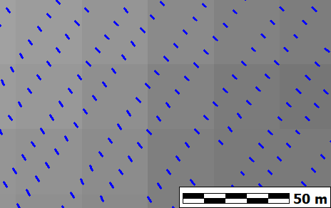
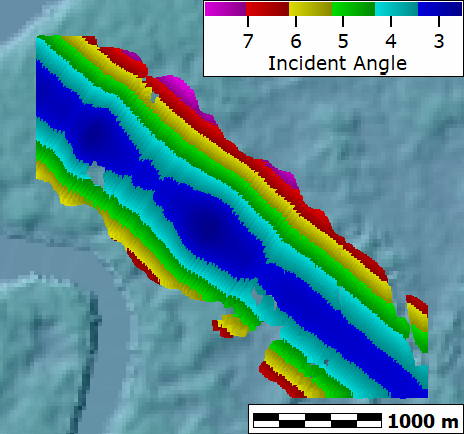
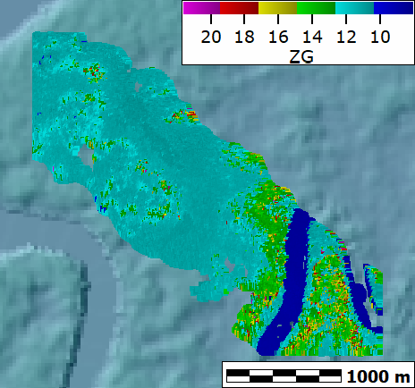
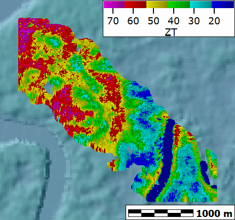
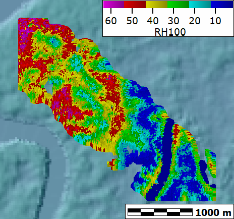
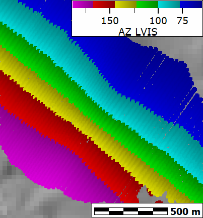
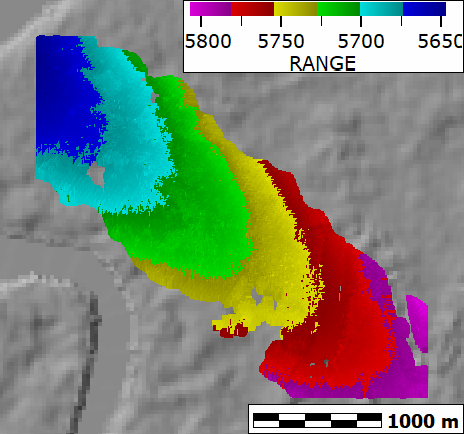
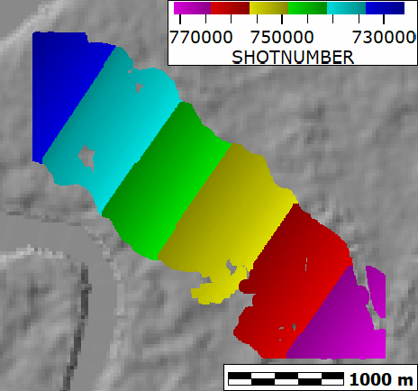

The LVIS returns can be plotten on a map, with any of the parameters colored. These are from the survey of Gabon.
The maps can display two things:
|
 |
The scan pattern from LVIS, which is parallel to the flight path. The aircraft flew NW to SE. |
|
 |
Because LVIS records the top and base of the waveform, software can
compute the horizontal distance traversed by the wave. This connects the two points, EDIT button, Field geometry, Distance between two points in record The distance is typically < 2 m |
 |
Unlike typical scanning lidars which scan on either side of nadir, LVIS scans to the front of the aircraft. Points directly along the flight path are about 3 degrees, which those on the edges of the swath are about 8 degrees. This angle is the number of degrees, measured from vertical (off-nadir). This is never very large, and accounts for the small ground footprint of the returns in each pulse. |
 |
ZG (ground elevation): --This would be a DTM if converted to a grid. The low points are streams on the SE edge of the map (nearly the same height in ZT, and with a CHM near 0). |
 |
ZT: -- elevation at the top of the canopy, this would be a DSM if converted to a grid |
 |
RH100, or CHM. Height from which cumulative 100% of the energy is returned. |
 |
Azimuth of laser pulse. The aircraft flight path is in the center, to the SE, about 130 degrees, and it scans to the left and right. You should think about this geometry with the incident angle. |
 |
Range of pulse. This portion of the record shows:
|
 |
SHOT or pulse NUMBER. The increase in numbers shows the flight direction, NW to SE. Not particularly useful, but shows the direction of flight. |
Last revision 6/30/2020